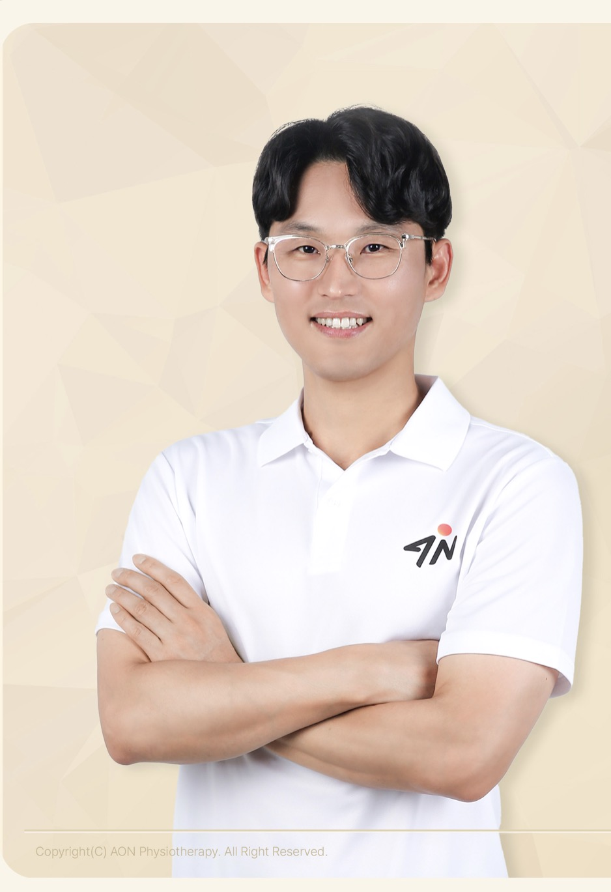
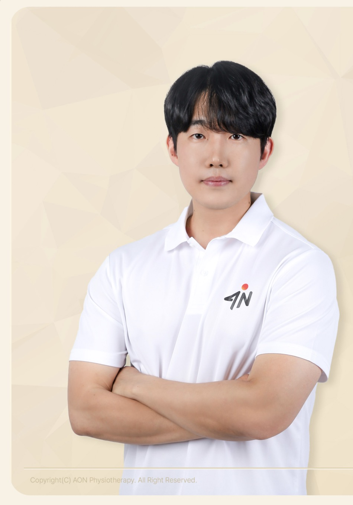
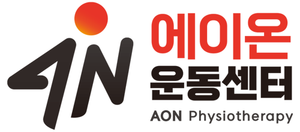

건강,
움직이면 바뀝니다.
에이온은 당신의 가능성을 깨우는 시작점입니다. 나만의 페이스로 꾸준히 움직이고, 스스로 몸을 관리할 수 있는 힘을 기르도록 돕습니다.
 에이온 재활운동센터AON Physiotherapy
에이온 재활운동센터AON Physiotherapy
임기준·이진범 공동대표가 함께 설립하고 운영하는 에이온 재활운동센터입니다.

에이온은 당신의 가능성을 깨우는 시작점입니다. 나만의 페이스로 꾸준히 움직이고, 스스로 몸을 관리할 수 있는 힘을 기르도록 돕습니다.
과학적 근거와 임상경험을 바탕으로 현재 기능을 확인하고, 스스로 관리할 수 있도록 체계적인 헬스케어 서비스를 제공합니다.
근골격계 만성 통증과 퇴행성 질환을 이해하고 관리하여 삶의 질을 높이며, 스포츠 손상의 회복과 예방을 통해 건강한 복귀를 돕습니다.
전 연령이 자신의 속도로 움직일 수 있는 환경을 준비합니다.
현재 상태와 목표, 회복 단계에 맞춰 운동을 조정합니다.
운동을 처음 시작하거나 움직임이 두려운 분도 함께합니다.
무조건 강하게 하기보다 지속할 수 있는 움직임을 만듭니다.
에이온 재활운동센터는 물리치료사 출신의 임기준 공동대표와 이진범 공동대표가 함께 설립하고 운영합니다.

18년간 척추·관절 수술병원, 정형외과, 통증의학과와 재활병원에서 수술 후 재활과 근골격계 통증·움직임 문제를 함께해 왔습니다.
직접 어깨 회전근개 봉합수술과 긴 재활을 경험하면서, 치료 이후에도 꾸준히 관리할 수 있는 운동 공간의 필요성을 느꼈습니다. 국내외 교육과 뉴질랜드 물리치료 시스템에서 배운 내용을 임상경험과 연결해 센터의 재활운동 기준으로 발전시키고 있습니다.
APPI 근골격계 임상 펠로십 · Ben Cormack 치료적 움직임과 운동 · Melissa Davidson 남성 골반 건강 · Greg Lehman 통증과학 · Jeremy Lewis 어깨 과정 · McKenzie 허리 과정 · Kaltenborn-Evjenth KE-OMT · International Schroth 3D Scoliosis Therapy · Medical Training Therapy

10년의 임상경력과 물리치료 임상교육 경험을 바탕으로 재활부터 스포츠 퍼포먼스 트레이닝까지 연결합니다.
병원에서 통증이 줄어든 뒤에도 다시 불편해지는 분들을 보며, 자신의 몸을 이해하고 관리하는 능력을 기르는 과정이 중요하다는 확신을 얻었습니다. 본인도 장기간 부상과 재활을 경험했기에 통증, 불안감과 회복 과정의 막막함을 함께 살피며 운동을 진행합니다.
APPI 근골격계 임상 파운데이션·펠로십 · NZMPA 척추 과정 · Ben Cormack 치료적 움직임과 운동 · Greg Lehman 통증과학 · Pilates University · KACEP 운동처방사 · 연부조직이완 과정
현재 상태와 목표를 듣고, 필요한 기능을 평가하고, 다음 단계의 기준을 세웁니다. 운동 후 반응을 기록해 강도와 구성을 조정합니다.

서울특별시 송파구 송파대로 381 형제빌딩 4층